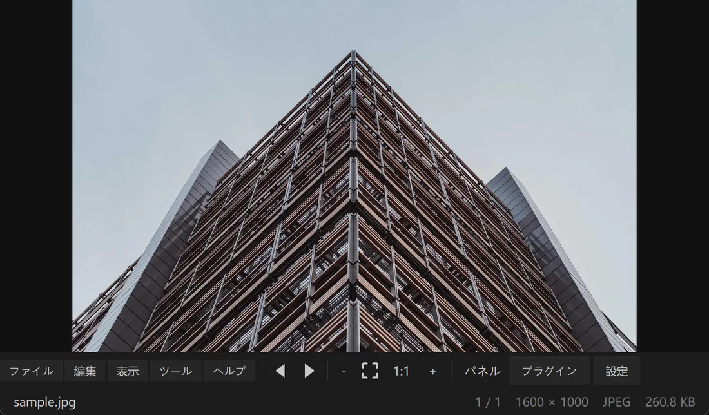
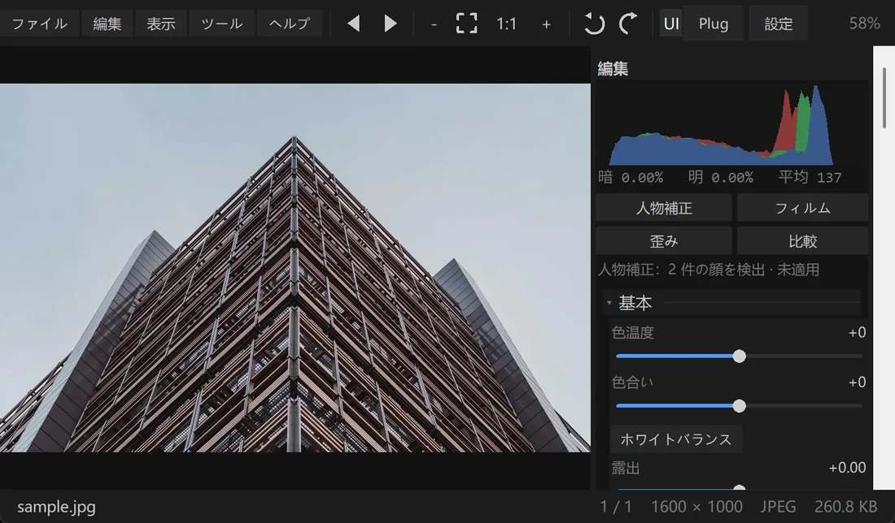
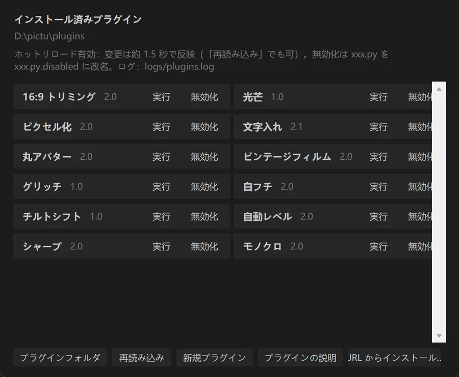
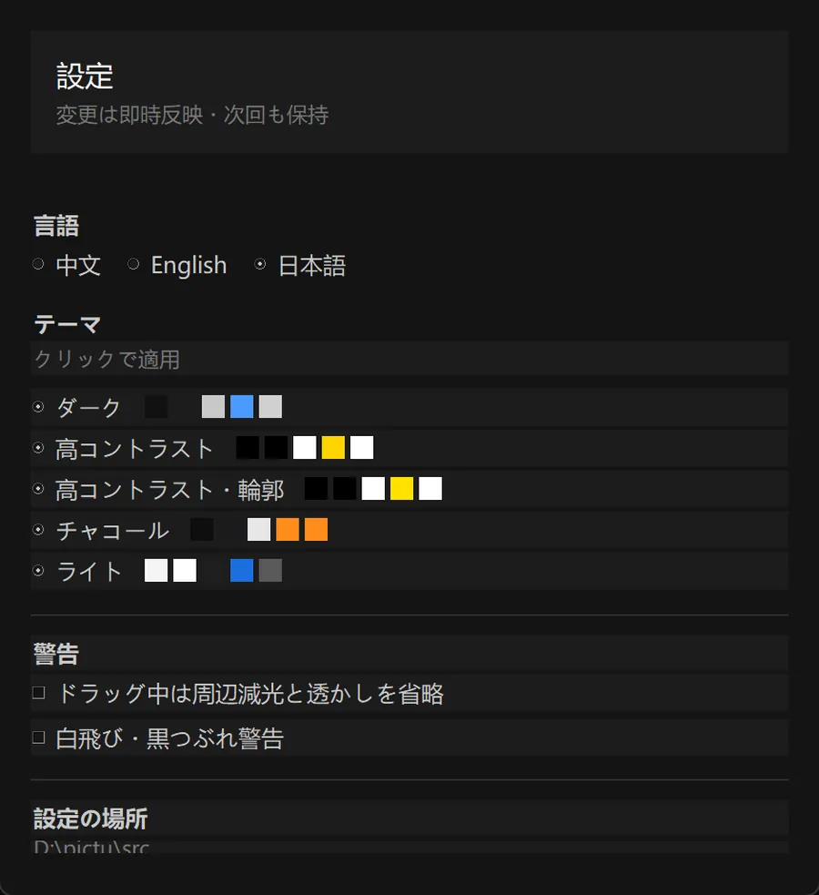
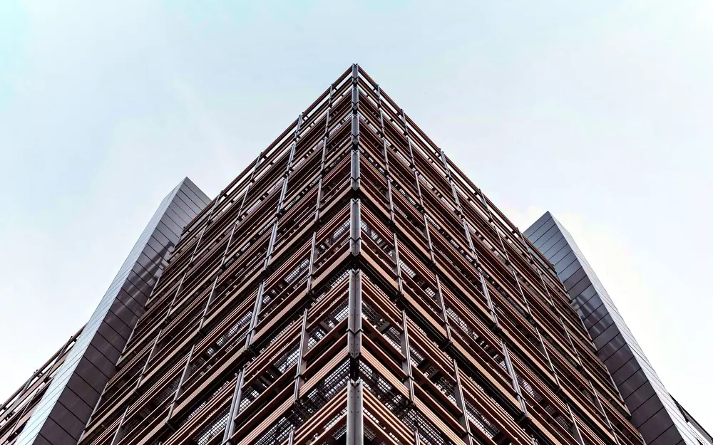
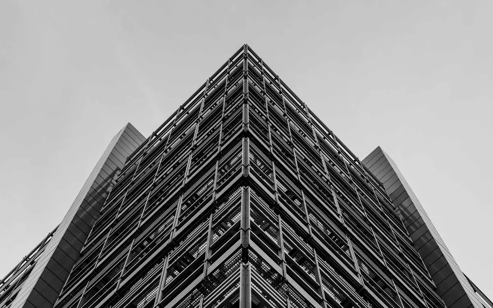
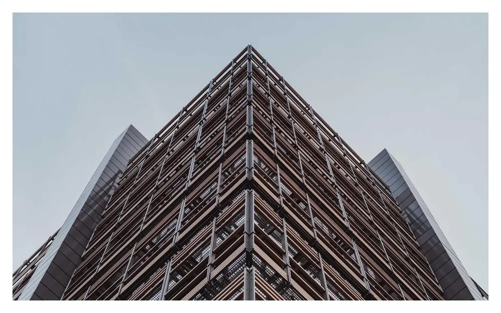

開くのも切り替えも速く、色調整も正確。ニコン NEF と一般的な形式に対応し、カーブ・HSL・ローカルフィルタを内蔵。プラグインで拡張できます。
すべてのダウンロード Windows フル版40.1 MB Windows ビューア40.0 MB macOS220 KB Linux220 KB




すべて実際の動作画面で、リリーススクリプト（tools/uishot.py）が自動生成したものです。

調整後 元画像中央の丸を左右にドラッグ して、露出・コントラスト・自然な彩度・色温度・周辺減光を適用した結果を比較できます。どちらも Prism 自身の描画パイプラインの出力です。
サンプル写真： Lorem Picsum（Unsplash の画像・無料利用可）。色調整のデモ用です。


| すぐ開く | 表示領域だけを描画。4000 万画素でも最初の表示は 1 秒未満 |
| 本格的な色調整 | トーンカーブ、8 バンド HSL、カラーグレーディング。プレビューと書き出しがピクセル単位で一致 |
| レンズ / フィルム / 人物 | 歪み補正 · フィルム風 · 人物補正（アルゴリズムのみ、モデル不要） |
| ローカル調整 | 円形・グラデーションフィルタ。被写体と高コントラストの自動選択も |
| プラグイン拡張 | .py 1 ファイルがプラグイン。12 個同梱でパラメータ調整可能。plugins/ に置くだけ |
アルゴリズムのみ。モデルファイル不要・通信なし・アップロードなし。
| 肌の滑らかさ | 周波数分離：低周波のムラだけを抑え、毛穴はそのまま |
| 肌の明るさ・均一化 | 肌領域を明るく、メディアンフィルタで小ジミを除去 |
| シミ・ニキビ跡 | 背景差分で暗いシミを見つけて補正。サイズ調整可 |
| 目の下のくま | 目の下の暗部だけを持ち上げ、青を抑えて紫を軽減 |
| 歯・唇の色 | 明るさと赤緑差で歯と唇を分離 |
| 小顔・目を大きく | 逆写像リサンプリング。目の位置を自動検出 |
| 素肌 | すべてゼロ |
| ナチュラル | 肌 35 · シミ 25 · 歯 20 |
| ポートレート | 肌 60 · シミ 50 · 目元 35 · 小顔 15 |
| インフルエンサー | 肌 85 · シミ 70 · 目元 60 · 小顔 45 |
| 入口 | ツール → 人物補正… |
| ビフォア・アフター | B を押している間はオフ |
| ステータス行 | パネル上部に検出した顔数・現在の値・適用外かどうかを表示 |
| ガード | 極小・単色・モノクロ・極端な比率では自動的にスキップ |
パラメータ表と実装の詳細は README の「人物補正」を参照。
プラグインは Python ファイル 1 つ。プログラム横の plugins/ に入れて「再スキャン」を押すだけ。登録も再起動も不要。
| プラグインを書く | .py を追加し run(img) を定義 |
| 入力 | img は全調整済みの PIL.Image（RGB） |
| 出力 | 新しい PIL.Image を返す。None でスキップ |
| メタ情報 | PLUGIN_NAME / PLUGIN_DESC / PLUGIN_VERSION / PLUGIN_AUTHOR |
| はじめ方 | 「プラグイン → 新規プラグイン」でコメント付きテンプレートを生成 |
| Windows | |
| 1 | ダウンロード Prism-Setup-9.8.1.exe をダブルクリック |
| 2 | インストール方法（ユーザー領域 / その場で展開）と場所を選択 |
| 3 | スタートメニューとデスクトップのショートカットは任意。完了後すぐ起動します |
| macOS | |
| 1 | Python 3 をインストール：python.org |
| 2 | 展開して「启动 Prism.command」をダブルクリック |
| 3 | 開発元を確認できない場合：右クリック → 開く、または「プライバシーとセキュリティ」で許可 |
| Linux | |
| 1 | 依存関係をインストール：sudo apt install python3-tk python3-pil |
| 2 | chmod +x prism.sh && ./prism.sh |
| 3 | アプリメニューに追加：フォルダを /opt/Prism に置き、 Prism.desktop を /usr/share/applications/ |
| ← / → | 前 / 次 |
| + / − / 1 | 拡大 / 縮小 / 100% |
| F | ウィンドウに合わせる |
| R / Shift+R | 時計回り / 反時計回りに回転 |
| E | 編集パネルの表示切り替え |
| C | トリミング |
| G | グリッド表示 |
| Ctrl+Z / Ctrl+Y | 元に戻す / やり直す |
| Esc | 現在の状態を抜ける（終了はしません） |
| 置き場所 | プログラムフォルダ内の plugins/（初回起動時に作成） |
| 書き方 | 1 つの .py ファイルに run(img) を定義。任意で PARAMS を宣言するとスライダーを自動生成 |
| インストール | plugins/ に .py を置くか、「プラグイン → URL からインストール…」でダウンロード URL を入力（SHA-256 は任意） |
| プラグインマーケット | 公式カタログ index.json：一覧・インストール済み/更新ありの表示・ワンクリック導入。オフライン時はキャッシュ |
| パラメータ | 各プラグインのパラメータは自動保存され、次回実行時に復元されます |
| ドキュメント | プラグインガイド · プラグイン API |
| 使い方 | ツールバーの「プラグイン」→ 実行。結果ウィンドウで調整して別名保存できます |
| 同梱数 | 12 個：ピクセル化・ビンテージフィルム・丸アバター・白フチ・シャープ・モノクロ・自動レベル・文字入れ・16:9 トリミング・チルトシフト・光芒・グリッチ |
インストーラは未署名です。「詳細情報」→「実行」で起動できます。通信なし・管理者権限不要。
まずターミナルで実行： chmod +x "启动 Prism.command"。開発元を確認できない場合は右クリック → 開く。
Tk が入っていません：sudo apt install python3-tk（Fedora では python3-tkinter）。
ビューアには編集パネルがなく、閲覧・ズーム・回転・スライドショー・フィルムストリップ・グリッドのみ。サイズは小さく、対応形式と描画速度は同じです。
F11 の全画面は一部環境で正しく表示されないため、互換モード（枠なし最大化 + Esc で解除）にしています。
Markdown の詳細： README.md。
| Windows | |
| フル版インストーラ | 39.8 MB · 編集パネルとプラグイン込み |
| ビューアのみ（インストーラ） | 39.9 MB · フル版と同じ手順。スタートメニューとデスクトップのショートカット付き |
| ビューアのみ（ポータブル） | 29.9 MB · 展開してすぐ使える。レジストリ不要 |
| macOS / Linux | |
| macOS パッケージ | 104 KB · ソースから実行。Python 3 + Pillow が必要 |
| Linux パッケージ | 105 KB · .desktop 付き。python3-tk が必要 |
| 要件（Windows 版） | |
| OS | Windows 10 / 11（64bit） |
| ランタイム | 不要。すぐ使えます |
| ディスク使用量 | 約 75 MB |
| 権限 | 一般ユーザー。管理者不要 |
| インストール手順 | ダブルクリック → 方法と場所を選択 → 起動 |
ダウンロード前の注意
1. インストーラは未署名のため SmartScreen が出ることがあります（下記「安全な回避」参照）。
2. 全画面は互換モード（枠なし最大化 + Esc で解除）で、システム全画面ではありません。
3. macOS と Linux はソース版で、.app / AppImage はありません。
ポータブル版：Prism-Portable-9.8.1.zip（フル版を展開してすぐ使える。レジストリ・スタートメニュー登録なし）
インストーラは未署名のため「Windows によって PC が保護されました」と表示されます。まずファイルを検証してください：
Get-FileHash .\Prism-Setup-9.8.1.exe -Algorithm SHA256未署名の実行ファイルを避けたい場合は、上のポータブル版かソースから実行してください：
python src/Prism.pyw。
| サイト証明書 | |
| プロトコル | HTTPS（強制リダイレクト・平文なし） |
| サブジェクト | *.github.io |
| 発行元 | Let's Encrypt（GitHub Pages が自動発行・更新） |
| 有効期限 | 2026-12-30 |
| インストーラのチェックサム | |
| ファイル | Prism-Setup-9.8.1.exe |
| SHA-256 | 15D214FB83C5B1EBB09D818573206498E624B26AF98159510006E551F3D916C3 |
ダウンロード後に次で照合： certutil -hashfile ファイル名 SHA256（Windows）または shasum -a 256 ファイル名（macOS/Linux）。